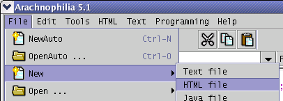

| Documentation | | | |
Arachnophilia is CareWare
? How does a Web page work?
! A Web page is a plain-text, human-readable computer file that contains words and some special instructions about how the words should appear. Those instructions are called "tags." A Web page can also contain references to other Web pages, graphic images, sounds and so forth. Those references are called "links."
? How can I create a simple Web page?
! A Web page carries text-formatting and other information in its tags. The text and tags in the Web page are interpreted by a program called a "Web browser." Here is what a Web page looks like in a Web editor like Arachnophilia as plain text, and as it appears on a browser:
Web Editor (plain text) <html> <head> <title> This is my page! </title> </head> <body> <h2> Welcome to my web page! </h2> By using HTML tags I can make my text <i> italic, </i> or <b> bold, </b> or <u> underlined. </u> </body> </html>
Browser: This is my page! Welcome to my Web page!
By using HTML tags I can make my text italic, or bold, or underlined.Notice the <tags> above: A starting <tag> and an ending </tag> control what is between them. As in this example, almost all tags come in pairs (but, unfortunately, not all of them). A very important kind of tag is called a "link." Links are why HTML pages are not just another kind of word processing document, with styled text. Among other things, links allow the viewer of the page to move:
- The tag "<b>" means "Start printing bold text."
- The tag "</b>" means "Okay, you can stop doing that bold thing I said before."
Here is what a link looks like in plain text, and when viewed in a browser:
- To another part of the current page (as the links at the top of this page do),
- To another page on your site,
- To another location on the Internet.
The browser display at the right contains the display version of the link, and if you click it (and if you are logged onto the Internet), you will go to the Arachnophilia Home Page. Notice that there are two parts to a link:
Web Editor (plain text) <a href="http://www.arachnoid.com/arachnophilia"> Go to the Arachnophilia Home Page </a>
Browser Go to the Arachnophilia Home Page To work as intended and meet people's expectations, your links should always have both parts.
- The actual Internet address: "http://www.arachnoid.com/arachnophilia".
- A human-readable label that stands for the address: "Go to the Arachnophilia Home Page".
? How do I get my page from my computer to the Internet?
! It's easy, really! Here are the steps: * First, create a new HTML document. Run Arachnophilia and choose File ... New ... HTML File. Like this:
- Create a new HTML document,
- Type some text into the page,
- Save your new page,
- Preview the page.
You will be asked to provide a title for your page. The title is very important — it appears on the browser's title bar and is rather conspicuous to your visitors. You can always change the title later. Now you will see something more or less like this:The red vertical line (" | ") is called the "cursor" or "caret." The two terms are used interchangeably. If you have already learned how to use a word processor, you will know what this term means. But if you haven't, the cursor is the point of action in a word processor program — it is where things happen. When you want to put some words in a particular place, first you put the cursor there, then you type. * Now type something:
Web Editor 1 <!DOCTYPE html PUBLIC "-//W3C//DTD XHTML 1.0 Transitional//EN" "http://www.w3.org/TR/xhtml1/DTD/xhtml1-transitional.dtd"> 2 3 <!-- Created on Mar 3, 2002 11:56:06 PM --> 4 5 <html> 6 <head> 7 <title> 8 My page! 9 </title> 10 <meta name="GENERATOR" content="Arachnophilia 5.0"/> 11 <meta name="FORMATTER" content="Arachnophilia 5.0"/> 12 </head> 13 14 <body bgcolor="#ffffff" text="#000000" link="#0000ff" vlink="#800080" alink="#ff0000"> 15 16 | 17 18 </body> 19 </html> 20Okay, it's not Shakespeare, but this is just a rehearsal for reality, not reality itself. :) * Next step — save your page.
Web Editor 1 <!DOCTYPE html PUBLIC "-//W3C//DTD XHTML 1.0 Transitional//EN" "http://www.w3.org/TR/xhtml1/DTD/xhtml1-transitional.dtd"> 2 3 <!-- Created on Mar 3, 2002 11:56:06 PM --> 4 5 <html> 6 <head> 7 <title> 8 My page! 9 </title> 10 <meta name="GENERATOR" content="Arachnophilia 5.0"/> 11 <meta name="FORMATTER" content="Arachnophilia 5.0"/> 12 </head> 13 14 <body bgcolor="#ffffff" text="#000000" link="#0000ff" vlink="#800080" alink="#ff0000"> 15 16 This is my personal Web page!| 17 18 </body> 19 </html> 20A digression: Nothing is more frustrating than to lose computer documents on which hours may have been spent. Always save your documents, and always know where your documents have been saved. Don't just press "Save" once in a while without thinking about where the document is being stored. Be proactive — choose (create) a directory for your Web site, and put all the components there. I emphasize this because I have received any number of e-mails over the years from otherwise intelligent people who leave the room, pet the cat, return, and then simply cannot figure out what happened to their magnum opus.Choose File ... Save As. A file explorer dialog will appear. Choose an appropriate directory and file name. * Now let's look at your page on a Web browser. Most recent personal computers are provided with at least one browser. In this step (and assuming you haven't already done this), you will help Arachnophilia find a browser. To start the process, either press this toolbar button: or press Ctrl-P. After an explanatory message, you will see this dialog: First, if the default search path doesn't look right for your system, choose an appropriate one, either by typing it in or by using the "Browse" button. On Windows systems, most browsers are located in a directory named "/Program Files". On Linux systems of recent vintage, it will be "/usr/bin". Macintosh users will probably see a default of "/Applications". One of these alternatives will most likely appear automatically based on your operating system. Having chosen an appropriate search path, press "Search." The browser search engine will search for any of the browser names listed at the left (and you can add to the list). With any luck, one or more browser paths will appear in the list at the right. To transfer the results to your personal browser list, press "Transfer", then "OK." Then, to view your page, press the preview button ( ) or Ctrl-P again.If all these features fail to locate your browser, you can simply type in a browser name and a path to its executable in the lower part of the browser dialog, then press "OK".
! Unfortunately for beginning Web page builders, this is the most complex part of getting started. If you have a friend with more Web experience, you might want to ask for help at this point. The normal way to get your page from your computer to the Internet is to use a file transfer protocol named (surprise!) File transfer Protocol (FTP). Arachnophilia has a built-in FTP service to help you do this. Before using the FTP service, you need to have some information, information that your Internet service provider should have given you: As a first step, locate this information and have it available. Next, make sure your new page is still displayed in Arachnophilia's Web editor window. Then choose menu item HTML ... Run FTP Service or press Alt-F. You will see something like this:
- The name of the FTP server.
- Your logon user name.
- Your logon password.
- Your directory path.
Here are the steps to take:Having entered this information, you can test the connection:
- For "Site Name," type in something you will remember easily. This is not a special name, it is just a convenient label.
- For "Server name", type the FTP server name provided by your Internet service.
- For "User Name", type the login name provided by your service.
- For "Password", type in the password you were given. You have the option to save the password so you don't have to type it in each time you use the FTP service. But this entails a small risk — a skilled computer person, a hacker, could, in principle, acquire and decrypt your password if he gained access to your computer. You decide.
- For "Remote directory", type in this information if it has been provided by your service.
NOTE: Most remote FTP directory paths must begin with a prefix, like "/", or "~/". If you omit this prefix, the FTP transaction may not work as expected. If you are unsure about this issue, be sure to include a prefix, like this: "/myPages". Some services require "~/", an example would be "~/html". If you don't know which to use, or are unsure which directory path to enter, please ask your ISP.- For "Local directory", and if you have your Web page still loaded into Arachnophilia, simply press the button to the right — "Use Current." This is an easy way to tell the FTP service where your page is located in the local computer.
With any luck, the rehearsal will go off without a hitch. If any problems arise, simply move the "Level" slider to the right (to show more information) and press "Rehearse" again to see what the problem is. You may have typed in the site name, user name or password incorrectly — remember, the case of these entries is significant. Once you have a successful rehearsal, press "Execute." In most cases, "Execute" will upload your Web page. Use the troubleshooting procedure described above if problems arise. Now you can use your browser to view the online version of your page. Some Additional FTP Service Details:
- Make sure you are logged onto the Internet.
- Press the "Rehearse" button.
- The FTP service will contact your Internet service, scan the provided local directory, and report to you what it would upload if "Execute" had been pressed.
General Web site suggestions:
- The FTP Service uses a local log file to keep track of which files have been uploaded.
- When you change a page and save it, its modified date changes. If you run an FTP upload then, the program will compare the file's date with its log file entry. If a file's date is newer than its log entry, it will be uploaded and its log file entry will be changed.
- To prevent all your files from being uploaded all over again, just press "SyncLog." This synchronizes the local log file with the actual file modified dates, but without uploading anything.
- Conversely, to upload all the files regardless of their dates, choose "upload all," then "Execute." This forces a full upload.
- If you know you want to upload only a few files or just one, but you are not sure about the state of the log file, use this procedure:
For more advanced FTP instructions, click here.
- Press "SyncLog". This updates the log file without uploading anyting.
- Load, edit, and save just those file(s) you want to change (this changes their modified dates).
- Press "Execute." Only the changed files will be uploaded.
- About your page:
- Always keep a local copy of your page. Never assume that, because there is a copy on your provider's machine, you can delete your local copy. Internet service providers regularly lose machines and user data.
- If you have problems uploading your page, just go through the steps again.
- Did you type all the information exactly as it appears as provided by your service?
- Were you logged onto the Internet?
- Was your page loaded into Arachnophilia to allow the FTP Service's "Use Current" button to locate it?
- If you still cannot upload your page, ask a friend or contact your service provider for help.
- About general Web page design:
- Any number of magazines and books cover this topic — make a visit to a bookstore or library.
- There are online resources of all kinds to help you learn how to write Web pages.
- If you see a page that does something you want your page to do, simply look at the plain-text version of the page:
- In Microsoft Internet Explorer, choose menu item "View ... Source."
- In Netscape, choose menu item "View ... Page Source."
- Look at the page's tags. You can learn a lot this way.
- If you don't know abut search engines, you would do well to find out about this powerful Internet tool. Go to www.google.com for an example of a search engine. Type in "HTML tutor" to learn how useful a search engine can be.
| Documentation | | | |